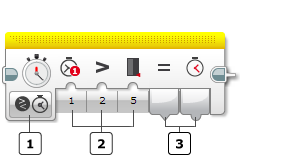
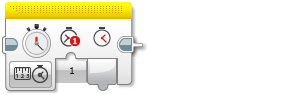
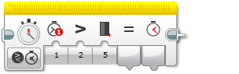
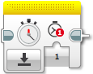

					<table cellpadding="0" cellspacing="0" border="0"><tbody><tr><td>
	
						<h1>计时器模块<a name="top"></a></h1>
		<div id="block_685" class="block blockHeader">
				<table cellspacing="0" cellpadding="0" border="0">
			<tbody><tr>
				<td valign="top" class="image"></td>
				<td valign="top" class="description"><div class="text-wrapper">计时器模块从 EV3 程序块中的内部计时器获取计时数据。可以测量时间间隔（以秒为单位）并获取数字输出。还可以将时间与阈值进行比较以获取逻辑（“真”或“伪”）输出。<br>
<br>
有关计时器工作原理、它提供的数据以及编程示例的更多信息，请参见<a href="./index.html?id=UsingSensors_Timer">使用计时器</a>。</div></td>
			</tr>
		</tbody></table>
			</div>
	<div id="block_686" class="block blockTip">
		<div class="title">提示和技巧</div>
		<div class="boxContent">
			<div class="description">计时器模块通过<a href="./index.html?id=DataWires">数据线</a>输出数据。有关无需数据线的其他使用计时器的方式，请参见<a href="./index.html?id=UsingSensors_Timer">使用计时器</a>。</div>
				</div>
	</div>
	<div id="block_688" class="block blockChaptor">
		<div class="title"><a name="ChooseTheTimerNumberAndMode" style="position:relative; top:-10px;"></a>选择计时器编号和模式</div>
		<div class="description"><br>
<br>
 模式选择器<br>
 输入<br>
 输出<br>
<br>
使用模式选择器可为模块选择模式。可用<a href="./index.html?id=Timer#InputsAndOutputs">输入和输出</a>会因模式而异。下面介绍了模式。<br>
<br>
使用<a href="./index.html?id=Timer#Timerlink">计时器</a>输入可选择计时器编号。EV3 程序块具有八个计时器，因此可以一起对多达八个不同事件进行计时。</div>
	</div>
	<div id="block_689" class="block blockChaptor">
		<div class="title"><a name="Modes" style="position:relative; top:-10px;"></a>模式</div>
		<div class="description"></div>
	</div>
	<div id="block_690" class="block blockMode">
		<div class="title"><a name="Mode_MeasureTime" style="position:relative; top:-10px;"></a>测量</div>
		<div class="description"><br>
<br>
“测量”模式在<a href="./index.html?id=Timer#TimerValue">经过时间</a>中输出计时器值。时间从上次使用“重置”模式重置计时器时（或是如果从未重置计时器，则从程序开始时）来进行测量（以秒为单位）。</div>
			<div class="links">请参见<a href="./index.html?id=UsingSensors_Timer">使用计时器</a>中的编程示例 2。</div>
	</div>
	<div id="block_691" class="block blockMode">
		<div class="title"><a name="Mode_CompareTime" style="position:relative; top:-10px;"></a>比较</div>
		<div class="description"><br>
<br>
“比较”模式使用所选<a href="./index.html?id=Timer#Comparison">比较类型</a>将计时器值与<a href="./index.html?id=Timer#Threshold">阈值</a>（以秒为单位）进行比较。“真/伪”结果在<a href="./index.html?id=Timer#Result">比较结果</a>中输出，计时器值在<a href="./index.html?id=Timer#TimerValue">经过时间</a>中输出。</div>
	</div>
	<div id="block_692" class="block blockMode">
		<div class="title"><a name="Mode_Reset" style="position:relative; top:-10px;"></a>重置</div>
		<div class="description"><br>
<br>
“重置”模式将<a href="./index.html?id=Timer#Timerlink">计时器</a>输入指定的计时器重置为零。计时器会立即从零再次开始计时。<br>
<br>
有关编程示例，请参见<a href="./index.html?id=UsingSensors_Timer">使用计时器</a>。</div>
	</div>
	<div id="block_693" class="block blockChaptor">
		<div class="title"><a name="InputsAndOutputs" style="position:relative; top:-10px;"></a>输入与输出 <a name="Parameters" style="position:relative; top:-10px;"></a></div>
		<div class="description">可用于计时器模块的输入取决于所选模式。可以将输入值直接输入到模块中。或者，可以通过<a href="./index.html?id=DataWires">数据线</a>从其他编程模块的输出提供输入值。</div>
	</div>
	<div id="block_694" class="block blockTable ">
		<table class="blockTable">
		

			<tbody><tr>
<th>输入</th><th>类型</th><th>允许的值</th><th>备注</th>			</tr>
<tr><td>计时器 <a name="Timer" style="position:relative; top:-10px;"></a>  <a name="Timerlink" style="position:relative; top:-10px;"></a></td><td>数字</td><td>1 － 8</td><td>要使用的计时器</td></tr><tr><td>比较类型 <a name="Comparison" style="position:relative; top:-10px;"></a></td><td>数字</td><td>0 － 5</td><td>0：=（等于）<br>
1：≠（不等于）<br>
2：&gt;（大于）<br>
3：≥（大于或等于）<br>
4：&lt;（小于）<br>
5：≤（小于或等于）</td></tr><tr><td>阈值 <a name="Threshold" style="position:relative; top:-10px;"></a></td><td>数字</td><td>任何数字</td><td>要与之进行比较的值（以秒为单位）</td></tr>		</tbody></table>
	</div>
	<div id="block_695" class="block blockStep">
		<div class="title"></div>
		<div class="description">可用输出取决于所选模式。要使用某个输出，请使用<a href="./index.html?id=DataWires">数据线</a>将该输出连接到另一个编程模块。</div>
	</div>
	<div id="block_696" class="block blockTable ">
		<table class="blockTable">
		

			<tbody><tr>
<th>输出</th><th>类型</th><th>备注</th>			</tr>
<tr><td>经过时间 <a name="TimerValue" style="position:relative; top:-10px;"></a></td><td>数字</td><td>时间（以秒为单位）</td></tr><tr><td>比较结果 <a name="Result" style="position:relative; top:-10px;"></a></td><td>逻辑</td><td>比较模式的“真/伪”结果。</td></tr>		</tbody></table>
	</div>
	
			<div id="quick">
				<div class="header"><a href="./index.html?id=Timer#header">计时器</a></div>
					<div class="quickText">快速链接</div>
					
					<ul>
	<li><a href="./index.html?id=Timer#ChooseTheTimerNumberAndMode">选择计时器编号和模式</a></li><li><a href="./index.html?id=Timer#Modes">模式</a></li><li><a href="./index.html?id=Timer#InputsAndOutputs">输入与输出</a></li>					</ul>
			</div>
	
	</td></tr></tbody></table>